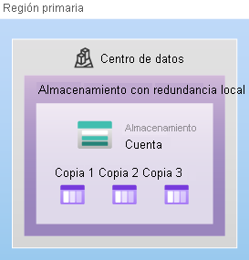
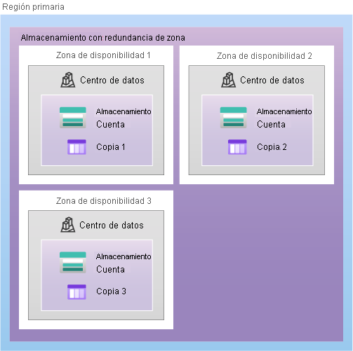
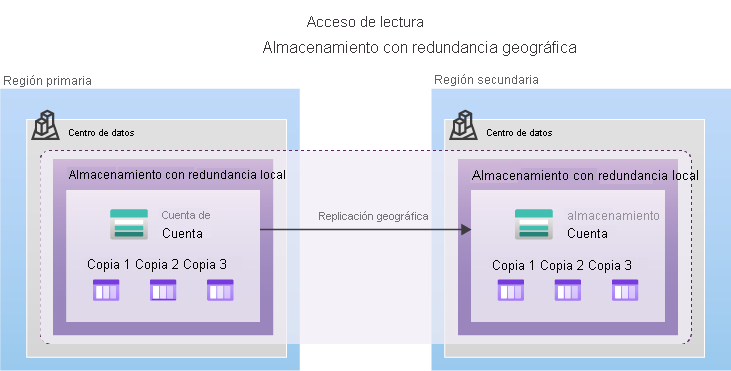
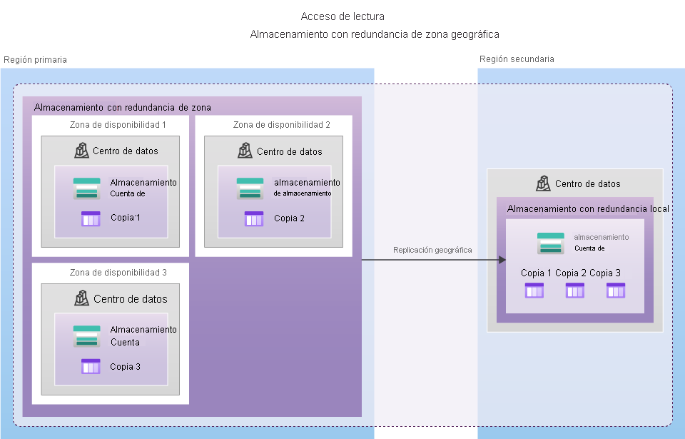
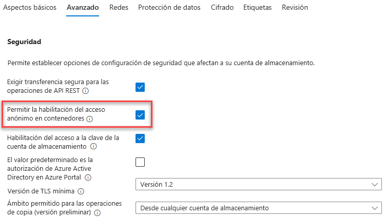

En este módulo, se le presentarán los servicios de Azure Storage. Obtendrá información sobre la cuenta de Azure Storage y cómo se relaciona con los distintos servicios de almacenamiento que hay disponibles. También descubrirá los niveles de almacenamiento de blobs, las opciones de redundancia de datos y las formas de mover datos o incluso infraestructuras completas a Azure.
En el vídeo siguiente se presentan los distintos servicios que deben estar disponibles con Azure Storage.
videoUna cuenta de almacenamiento proporciona un espacio de nombres único para los datos de Azure Storage al que se puede acceder desde cualquier lugar del mundo a través de HTTP o HTTPS. Los datos de esta cuenta son seguros, de alta disponibilidad, duraderos y escalables de forma masiva. Al crear la cuenta de almacenamiento, primero seleccionará el tipo de cuenta de almacenamiento. El tipo de cuenta determina los servicios de almacenamiento y las opciones de redundancia, y afecta a los casos de uso. A continuación se muestra una lista de opciones de redundancia que se describirán más adelante en este módulo:
| Tipo | Servicios admitidos | Opciones de redundancia | Uso |
|---|---|---|---|
| De uso general estándar, v2 | Blob Storage (incluido Data Lake Storage), Queue Storage, Table Storage y Azure Files | LRS, GRS, RA-GRS, ZRS, GZRS, RA-GZRS | Tipo de cuenta de almacenamiento estándar para blobs, archivos, colas y tablas. Se recomienda para la mayoría de los escenarios con Azure Storage. Si desea compatibilidad con el sistema de archivos de red (NFS) en Azure Files, utilice el tipo de cuenta de recursos compartidos de archivos Premium. |
| Blobs en bloques Premium | Blob Storage (incluido Data Lake Storage) | LRS, ZRS | Tipo de cuenta de almacenamiento Prémium para blobs en bloques y blobs en anexos. Se recomiendan para escenarios con altas tasas de transacciones, que utilizan objetos más pequeños o que requieren una latencia de almacenamiento constantemente baja. |
| Recursos compartidos de archivos Prémium | Azure Files | LRS, ZRS | Tipo de cuenta de almacenamiento Prémium solo para recursos compartidos de archivos. Se recomienda para empresas y aplicaciones de escalado de alto rendimiento. Use este tipo de cuenta si desea una cuenta de almacenamiento que admita recursos compartidos de archivos de Bloque de mensajes del servidor (SMB) y NFS. |
| Blobs en páginas Premium | Solo blobs en páginas | LRS | Tipo de cuenta de almacenamiento prémium solo para blobs en páginas. |
Una de las ventajas de usar una cuenta de Azure Storage es tener un espacio de nombres único en Azure para los datos. Para ello, todas las cuentas de almacenamiento de Azure deben tener un nombre de cuenta único en Azure. La combinación del nombre de la cuenta y el punto de conexión del servicio de Azure Storage forma los puntos de conexión de su cuenta de almacenamiento. Cuando especifique un nombre para la cuenta de almacenamiento, tenga en cuenta estas reglas:
En la tabla siguiente se muestra el formato de punto de conexión para los servicios de Azure Storage.
| Servicio de Storage | Punto de conexión |
|---|---|
| Blob Storage | https://<storage-account-name>.blob.core.windows.net |
| Data Lake Storage Gen2 | https://<storage-account-name>.dfs.core.windows.net |
| Azure Files | https://<storage-account-name>.file.core.windows.net |
| Queue Storage | https://<storage-account-name>.queue.core.windows.net |
| Table Storage | https://<storage-account-name>.table.core.windows.net |
Azure Storage siempre almacena varias copias de los datos, con el fin de protegerlos de eventos planeados y no planeados, lo que incluye errores transitorios del hardware, interrupciones del suministro eléctrico o cortes de la red, y desastres naturales. La redundancia garantiza que la cuenta de almacenamiento cumple sus objetivos de disponibilidad y durabilidad, aunque se produzcan errores. A la hora de decidir qué opción de redundancia es la más adecuada para su escenario, intente buscar un equilibrio entre bajo costo y alta disponibilidad. Entre los factores que ayudan a determinar qué opción de redundancia debe elegir se incluye:
Los datos de una cuenta de Azure Storage siempre se replican tres veces en la región primaria. Azure Storage ofrece dos opciones para replicar los datos en la región primaria, el almacenamiento con redundancia local (LRS) y el almacenamiento con redundancia de zona (ZRS).
El almacenamiento con redundancia local (LRS) replica los datos tres veces dentro de un único centro de datos en la región primaria. LRS ofrece una durabilidad mínima de 11 nueves (99,999999999 %) de los objetos en un año determinado.
LRS es la opción de redundancia de costo más bajo y ofrece la menor durabilidad en comparación con otras opciones. LRS protege los datos frente a errores en la estantería de servidores y en la unidad. No obstante, si se produce un desastre como un incendio o una inundación en el centro de datos, es posible que todas las réplicas de una cuenta de almacenamiento con LRS se pierdan o no se puedan recuperar. Para mitigar este riesgo, Microsoft recomienda el uso del almacenamiento con redundancia de zona (ZRS), el almacenamiento con redundancia geográfica (GRS) o el almacenamiento con redundancia de zona geográfica (GZRS).
Para las regiones con zona de disponibilidad habilitada, el almacenamiento con redundancia de zona (ZRS) replica los datos de Azure Storage sincrónicamente en tres zonas de disponibilidad de Azure en la región primaria. ZRS proporciona a los objetos de datos de Azure Storage una durabilidad de al menos 12 nueves (99,9999999999 %) durante un año determinado.
Con ZRS, los datos son accesibles para las operaciones de escritura y lectura incluso si una zona deja de estar disponible. No es necesario volver a montar los recursos compartidos de archivos de Azure de los clientes conectados. Si alguna zona deja de estar disponible, Azure realiza las actualizaciones de la red, como el redireccionamiento de DNS. Estas actualizaciones pueden afectar a la aplicación si se accede a los datos antes de que se completen dichas actualizaciones. Microsoft recomienda usar ZRS en la región primaria para escenarios que requieren de alta disponibilidad. También se recomienda ZRS para restringir la replicación de datos dentro de un país o región para cumplir los requisitos de gobernanza de datos.
En el caso de las aplicaciones que requieren de alta durabilidad, puede optar por copiar los datos de la cuenta de almacenamiento en una región secundaria que esté a cientos de kilómetros de distancia de la región primaria. Si los datos de la cuenta de almacenamiento se copian en una región secundaria, los datos serán duraderos incluso en caso de un error catastrófico que impida que se recuperen los datos de la región primaria. Al crear una cuenta de almacenamiento, seleccione la región principal de la cuenta. La región secundaria emparejada se determina en función de los Pares de regiones de Azure y no se puede cambiar. Azure Storage ofrece dos opciones para copiar los datos en una región secundaria: almacenamiento con redundancia geográfica (GRS) y almacenamiento con redundancia de zona geográfica (GZRS). GRS es similar a ejecutar LRS en dos regiones, y GZRS es similar a ejecutar ZRS en la región primaria y LRS en la región secundaria. De manera predeterminada, los datos de la región secundaria no están disponibles para el acceso de lectura o escritura a menos que haya una conmutación por error a la región secundaria. Si la región primaria deja de estar disponible, puede conmutar por error a la región secundaria. Una vez completada la conmutación por error, la región secundaria se convierte en la región primaria y se pueden leer y escribir datos de nuevo.
Importante
Dado que los datos se replican en la región secundaria de forma asincrónica,
un error que afecte a la región primaria puede producir la pérdida de datos si no se puede recuperar dicha región.
El intervalo entre las escrituras más recientes en la región primaria y la última escritura en
la región secundaria se conoce como objetivo de punto de recuperación (RPO).
El RPO indica momento concreto en que se pueden recuperar los datos.
Normalmente, Azure Storage tiene un RPO inferior a 15 minutos, aunque
actualmente no hay ningún contrato de nivel de servicio sobre el tiempo que se tarda en replicar los datos en la región secundaria.
GRS copia los datos de manera sincrónica tres veces dentro de una ubicación física única en la región primaria mediante LRS. Luego copia los datos de forma asincrónica en una única ubicación física en la región secundaria (el par de regiones) mediante LRS. GRS proporciona a los objetos de datos de Azure Storage una durabilidad de al menos 16 nueves (99,99999999999999 %) durante un año determinado.
GZRS combina la alta disponibilidad que proporciona la redundancia entre zonas de disponibilidad con la protección frente a interrupciones regionales que proporciona la replicación geográfica. Los datos de una cuenta de almacenamiento de GZRS se almacenan en tres zonas de disponibilidad de Azure en la región primaria (de manera similar a ZRS) y también se replican en una región geográfica secundaria para protegerlos frente a desastres regionales. Microsoft recomienda el uso de GZRS en aplicaciones que requieran de coherencia, durabilidad y disponibilidad máximas, además de rendimiento excelente y resistencia para la recuperación ante desastres.
GZRS está diseñado para proporcionar una durabilidad mínima de 16 nueves (99,99999999999999 %) de los objetos en un año determinado.
El almacenamiento con redundancia geográfica (con GRS o GZRS) replica los datos en otra ubicación física de la región secundaria para protegerlos frente a los apagones regionales. Sin embargo, los datos están disponibles para su lectura solo si el cliente o Microsoft inician una conmutación por error de la región primaria a la secundaria. Sin embargo, si habilita el acceso de lectura a la región secundaria, los datos siempre están disponibles, incluso cuando la región primaria se ejecuta de forma óptima. Para obtener acceso de lectura a la región secundaria, habilite el almacenamiento con redundancia geográfica con acceso de lectura (RA-GRS) o el almacenamiento con redundancia de zona geográfica con acceso de lectura (RA-GZRS).
Importante
Recuerde que es posible que los datos de la región secundaria no estén actualizados debido al RPO.
La plataforma de Azure Storage incluye los servicios de datos siguientes:
Azure Blob Storage es una solución de almacenamiento de objetos para la nube. Puede almacenar grandes cantidades de datos, como datos de texto o binarios. Azure Blob Storage no está estructurada, lo que significa que no hay ninguna restricción en cuanto a los tipos de datos que puede contener. Blob Storage puede administrar miles de cargas simultáneas, cantidades enormes de datos de vídeo, archivos de registro en constante crecimiento y es accesible desde cualquier lugar con conexión a Internet. Los blobs no están limitados a formatos de archivo comunes. Un blob podría contener gigabytes de datos binarios transmitidos desde un instrumento científico, un mensaje cifrado para otra aplicación o datos en un formato personalizado para una aplicación que se está desarrollando. Una ventaja del almacenamiento en blobs con respecto al almacenamiento en disco es que no requiere que los desarrolladores piensen en discos o los administren. Los datos se cargan como blobs y Azure se encarga de las necesidades de almacenamiento físico. Blob Storage resulta muy conveniente para lo siguiente:
Se puede acceder a los objetos de Blob Storage desde cualquier parte del mundo a través de HTTP o HTTPS. Los usuarios o las aplicaciones cliente pueden acceder a los blobs mediante direcciones URL, la API REST de Azure Storage, Azure PowerShell, la CLI de Azure o una biblioteca cliente de Azure Storage. Las bibliotecas de cliente de almacenamiento están disponibles para varios lenguajes, como .NET, Java, Node.js, Python, PHP y Ruby.
Los datos almacenados en la nube pueden crecer a un ritmo exponencial. Para administrar los costos de las crecientes necesidades de almacenamiento, resulta útil organizar los datos en función de atributos como la frecuencia de acceso y el período de retención planeada. Los datos almacenados en la nube se pueden controlar de forma distinta según la forma en que se generan, se procesan y se accede a ellos a lo largo de su vigencia. Se puede acceder y modificar ciertos datos de forma activa a lo largo de su duración. Se accede con frecuencia a ciertos datos al inicio de su vida útil hasta que el acceso cae drásticamente a medida que envejecen. Algunos datos permanecen inactivos en la nube y, después de que se almacenan, no se accede a ellos prácticamente nunca. Para dar cabida a estas diferentes necesidades de acceso, Azure proporciona varios niveles de acceso, que puede usar para equilibrar los costos de almacenamiento con sus necesidades de acceso. Azure Storage ofrece diferentes niveles de acceso para el almacenamiento de blobs, lo que le ayuda a almacenar datos de objetos de la manera más rentable. Entre los niveles de acceso disponibles se incluyen:
Las siguientes consideraciones se aplican a los distintos niveles de acceso:
El almacenamiento de Azure Files ofrece recursos compartidos de archivos totalmente administrados en la nube a los que se puede acceder mediante los protocolos Bloque de mensajes del servidor (SMB) o Sistema de archivos en red (NFS) estándar del sector. Los recursos compartido de archivos de Azure Files se pueden montar simultáneamente mediante implementaciones locales o en la nube. A los recursos compartidos de archivos SMB de Azure se puede acceder desde clientes Windows, Linux y macOS. A los recursos compartidos de archivos NFS de Azure Files se puede acceder desde clientes Linux y macOS. Además, los recursos compartidos de archivos SMB de Azure Files se pueden almacenar en la caché de los servidores de Windows Server con Azure File Sync, lo que permite un acceso rápido allí donde se utilizan los datos.
Azure Queue Storage es un servicio para almacenar grandes cantidades de mensajes, Una vez que están almacenados, se puede acceder a los mensajes desde cualquier lugar del mundo mediante llamadas autenticadas con HTTP o HTTPS. Una cola puede contener tantos mensajes como el espacio que tenga la cuenta de almacenamiento (pueden ser millones). Cada mensaje individual de la cola puede llegar a tener un tamaño máximo de 64 KB. Las colas se utilizan normalmente para crear un trabajo pendiente del trabajo que se va a procesar de forma asincrónica. Queue Storage se puede combinar con funciones de proceso como Azure Functions para realizar una acción cuando se recibe un mensaje. Por ejemplo, supongamos que quiere realizar una acción después de que un cliente cargue un formulario en el sitio web. Podría hacer que el botón enviar en el sitio web desencadene un mensaje en Queue Storage. Después, podría usar Azure Functions para desencadenar una acción una vez recibido el mensaje.
El almacenamiento en Azure Disk o los discos administrados de Azure son volúmenes de almacenamiento de nivel de bloque que administra Azure para su uso con máquinas virtuales de Azure. Conceptualmente, son iguales que un disco físico, pero están virtualizados, lo que ofrece mayor resistencia y disponibilidad que un disco físico. Con los discos administrados, lo único que debe hacer es aprovisionar el disco; Azure se encargará del resto.
Azure Table Storage permite almacenar una gran cantidad de datos estructurados. Las tablas de Azure son un almacén de datos NoSQL que acepta llamadas autenticadas desde dentro y fuera de la nube de Azure. Esto le permite usar tablas de Azure para compilar la solución híbrida o de varias nubes y hacer que los datos estén siempre disponibles. Las tablas de Azure son ideales para el almacenamiento de datos estructurados no relacionales.
| Configuración | Valor |
|---|---|
| Subscription | Suscripción de Concierge |
| Grupo de recursos | Seleccione el grupo de recursos que comienza por learn. |
| Nombre de la cuenta de almacenamiento | Cree un nombre de cuenta de almacenamiento único |
| Region | Deje el valor predeterminado |
| Rendimiento | Estándar |
| Redundancia | Almacenamiento con redundancia local (LRS) |
Permitir la habilitación del acceso anónimo en contenedores individuales:Activada
En esta sección, creará un contenedor de blobs y cargará una imagen.
| Configuración | Valor |
|---|---|
| Nombre | Escriba un nombre para el contenedor. |
| Nivel de acceso anónimo | Privado (sin acceso anónimo) |
Nota
El Paso 4 necesitará una imagen. Si quiere cargar una imagen que ya tiene en el equipo,
continúe con el Paso 4. De lo contrario, abra una nueva ventana del explorador y busque
la imagen de una flor en Bing. Guarde la imagen en el equipo.
Nota
Puede cargar tantos blobs como quiera de esta manera.
Los nuevos blobs se enumerarán dentro del contenedor.
Debe recibir un mensaje de error similar al siguiente:
ResourceNotFound
The specified resource does not exist. RequestId:4a4bd3d9-101e-005a-1a3e-84bd42000000
Enhorabuena, ha completado este ejercicio. Ha creado una cuenta de almacenamiento, ha agregado un contenedor a esta cuenta y, después, ha cargado blobs (archivos) en el contenedor. Luego ha cambiado el nivel de acceso para que pudiera acceder al archivo desde Internet.
El espacio aislado limpia los recursos automáticamente cuando haya terminado con este módulo. Al trabajar en una suscripción propia, se recomienda identificar al final de un proyecto si aún necesita los recursos creados. Los recursos que dejas en ejecución pueden costar dinero. Puede eliminar los recursos de forma individual o eliminar el grupo de recursos para eliminar todo el conjunto de recursos.
Ahora que comprende las distintas opciones de almacenamiento dentro de Azure, es importante comprender también cómo obtener los datos y la información en Azure. Azure admite la migración en tiempo real de la infraestructura, las aplicaciones y los datos mediante Azure Migrate, así como la migración asincrónica de datos mediante Azure Data Box.
Azure Migrate es un servicio que le ayuda a migrar desde un entorno local a la nube. Azure Migrate funciona como centro
Además de trabajar con herramientas de ISV, el centro de Azure Migrate también incluye las siguientes herramientas para ayudar con la migración:
Azure Data Box es un servicio de migración física que ayuda a transferir grandes cantidades de datos de forma rápida, económica y confiable. La transferencia de datos segura se acelera mediante el envío de un dispositivo de almacenamiento propietario de Data Box que tiene una capacidad de almacenamiento utilizable máxima de 80 terabytes. Data Box se transporta hacia y desde el centro de datos a través de un transportista regional. Una caja resistente asegura y protege Data Box de daños durante el trayecto. Puede pedir el dispositivo Data Box a través de Azure Portal para importar o exportar datos desde Azure. Una vez recibido el dispositivo, puede configurarlo rápidamente mediante la interfaz de usuario web local y conectarlo a la red. Una vez que haya terminado de transferir los datos (ya sea dentro o fuera de Azure), simplemente devuelva Data Box. Si va a transferir datos a Azure, los datos se cargan de forma automática una vez que Microsoft vuelve a recibir Data Box. El servicio de Data Box se encarga de realizar el seguimiento de todo el proceso en Azure Portal.
Data Box es ideal para transferir tamaños de datos con más de 40 TB en escenarios sin conectividad de red limitada. El movimiento de datos puede ser único, periódico o una transferencia de datos masiva inicial seguida de transferencias periódicas. Estos son los distintos escenarios donde se puede usar Data Box para importar datos en Azure.
Estos son los distintos escenarios donde se puede usar Data Box para exportar datos a Azure.
Una vez que los datos del pedido de importación se cargan en Azure, los discos del dispositivo se limpian, según las normas NIST 800-88r1. Si el pedido es de exportación, los discos se borran una vez que el dispositivo llega al centro de datos de Azure.
Además de la migración a gran escala mediante servicios como Azure Migrate y Azure Data Box, Azure también tiene herramientas diseñadas para ayudarle a mover o interactuar con archivos individuales o grupos de archivos pequeños. Entre esas herramientas se encuentran AzCopy, Explorador de Azure Storage y Azure File Sync.
AzCopy es una utilidad de línea de comandos que puede usar para copiar blobs o archivos a una cuenta de almacenamiento o desde una cuenta de almacenamiento. Con AzCopy, puede copiar archivos entre cuentas de almacenamiento, cargarlos, descargarlos e incluso sincronizarlos. AzCopy incluso se puede configurar para trabajar con otros proveedores de nube para ayudar a mover archivos entre nubes.
Importante
La sincronización de blobs o archivos con AzCopy es una sincronización unidireccional.
Al sincronizar, designó el origen y el destino, y AzCopy copiará archivos o blobs en esa dirección.
No se sincroniza bidireccionalmente en función de las marcas de tiempo u otros metadatos.
Explorador de Azure Storage es una aplicación independiente que proporciona una interfaz gráfica para administrar archivos y blobs en la cuenta de Azure Storage. Funciona en sistemas operativos Windows, macOS y Linux y usa AzCopy en el back-end para realizar todas las tareas de administración de archivos y blobs. Con Explorador de Storage, puede cargar en Azure, descargar desde Azure o moverse entre cuentas de almacenamiento.
Azure File Sync es una herramienta que permite centralizar los archivos compartidos en Azure Files y mantener la flexibilidad, el rendimiento y la compatibilidad de un servidor de archivos de Windows. Es casi como convertir el servidor de archivos de Windows en una red de entrega de contenido en miniatura. Una vez que instale Azure File Sync en el servidor local de Windows, se mantendrá sincronizado bidireccionalmente con los archivos en Azure de forma automática. Con Azure File Sync, puede: